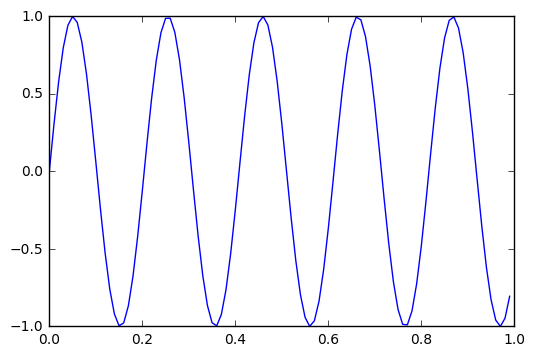

Interactive widgets that jupyter can use¶
Submission bar¶
In [1]:
from ipywidgets import widgets
from ipywidgets import interact
from IPython.display import display
import numpy as np
import matplotlib.pyplot as plt
%matplotlib inline
text = widgets.Text()
display(text)
def handle_submit(sender):
print(text.value)
text.on_submit(handle_submit)
Widget Javascript not detected. It may not be installed properly. Did you enable the widgetsnbextension? If not, then run "jupyter nbextension enable --py --sys-prefix widgetsnbextension"
asddg
Button¶
In [2]:
button_true = widgets.Button(description = "True")
button_false = widgets.Button(description = "False")
display(button_true)
display (button_false)
def on_button_clicked(b):
print("This is correct; it is true")
def on_button_clicked_fail(b):
print("Uh oh; this is false")
button_true.on_click(on_button_clicked)
button_false.on_click(on_button_clicked_fail)
Widget Javascript not detected. It may not be installed properly. Did you enable the widgetsnbextension? If not, then run "jupyter nbextension enable --py --sys-prefix widgetsnbextension"
Widget Javascript not detected. It may not be installed properly. Did you enable the widgetsnbextension? If not, then run "jupyter nbextension enable --py --sys-prefix widgetsnbextension"
interacting with function (sample from website)¶
In [3]:
t = np.arange(0.0, 1.0, 0.01)
def pltsin(f):
plt.plot(t,np.sin(2*np.pi*t*f))
plt.show()
interact(pltsin, f = (1,10,0.1))

Out[3]:
<function __main__.pltsin>
interacting with functions test¶
In [6]:
x = np.arange ( 0,2,.1)
def pltchart(r):
# it is interesting to note that the following line needs to have the x vector
#referenced otherwise you have length mismatch errors
plt.plot(x,(x**r))
plt.show()
# r = np.arange ( 1,99,.1)
# plt.plot(x,(r*2.0))
# plt.show()
interact(pltchart, r=(0,16))
Out[6]:
<function __main__.pltchart>
Checkbox¶
In [7]:
def g(x):
print(x)
interact(g,x=True)
Out[7]:
<function __main__.g>
In [ ]:
In [ ]:
In [ ]:
In [ ]:
In [ ]:
In [ ]:
In [ ]: